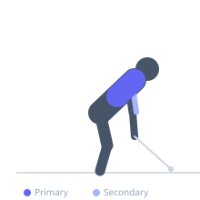
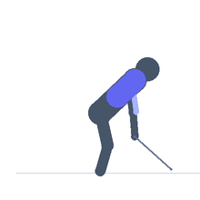

Exercise guide / Helms Cable Row
Helms Cable Row
The Helms cable row (a variation associated with physique coach Eric Helms) positions the lifter on a high-incline bench facing a low cable pulley, with the torso supported at approximately 60-70 degrees. This angle creates a combined vertical and horizontal pull that maximally stretches the lats and teres major throughout the range of motion, and the chest support eliminates lower back involvement.
Primary muscles
latissimus dorsi
teres major
Secondary muscles
rhomboid major
biceps brachii
Equipment
Cable Machine (High Pulley)
Dumbbell (Fixed)


Starting position
- Set a bench at 60-70 degrees incline near a low cable pulley. Lie prone with chest on the pad, feet on the floor. Grab the cable handle (rope, V-handle, or bar) with arms extended toward the pulley.
Setup
- Position the bench close enough to the cable stack that the arms are fully extended toward the pulley in the starting position.
Steps
- Step 1: Begin with arms fully extended, feeling a deep lat stretch.
- Step 2: Row the cable toward the torso, driving elbows back.
- Step 3: At peak contraction, hold 1 second.
- Step 4: Return under control to full arm extension.
- Step 5: Emphasize the stretch at the bottom — this differentiates the Helms row.
Coaching cues
- Let the weight pull you into a full stretch at the bottom
- Think 'lat stretch to lat squeeze'
- The bench angle is what makes this special — get it right
Breathing
- Exhale on the row. Inhale returning to the stretch.
Range of motion
- Maximum lat stretch at full arm extension to full retraction at peak contraction.
Tempo
- 2-2-3-1 (with 1s stretch pause)
Common mistakes
- Bench angle too low — the incline must be steep enough to allow full lat stretch
- Insufficient cable distance — the bench must be positioned to achieve true full extension
Safety
- Adjust cable height and bench position carefully before loading
- Keep the neck neutral — avoid craning while lying prone
Training
- hypertrophy: 10–15 reps
- hypertrophy: 3–4 sets
- Rest: {'hypertrophy': 90}